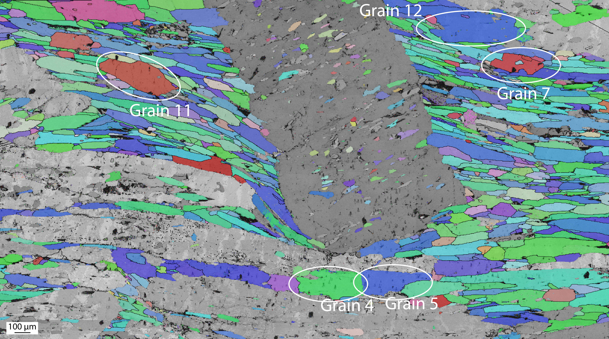

Merrypopins


merrypopins is a Python library to streamline the workflow of nano‑indentation experiment data processing, automated pop-in detection and analysis. It provides five core modules:
load_datasets: Load and parse.txtmeasurement files and.tdm/.tdxmetadata files into structured pandas DataFrames. Automatically detects headers, timestamps, and measurement channels.preprocess: Clean and normalize indentation data with filtering, baseline correction, and contact point detection.locate: Identify and extract pop‑in events within indentation curves using advanced detection algorithms, including:- Isolation Forest anomaly detection
- CNN Autoencoder reconstruction error
- Fourier-based derivative outlier detection
- Savitzky-Golay smoothed gradient thresholds
statistics: Perform statistical analysis and model fitting on located pop‑in events (e.g., frequency, magnitude, distribution). The statistics module allows you to compute detailed pop-in statistics, such as:- Pop-in statistics (e.g., load-depth and stress-strain metrics)
- Stress-strain transformation using Kalidindi & Pathak. (2008)
- Curve-level summary statistics (e.g., total pop-in duration, average time between pop-ins)
- Pop-in shape statistics like depth jump, average velocity, and curvature
make_dataset: Construct enriched datasets by running the full merrypopins pipeline and exporting annotated results and visualizations.
🌐 Try Merrypopins Library Online
🚀 Live demo: explore Merrypopins in your browser! 
The hosted app lets you:
- upload raw
.txtindentation files (and optional.tdm/.tdxmetadata), - tune preprocessing, detection & statistics parameters,
- visualise pop-ins interactively,
- download annotated CSVs + plots.
🛠 Source Instrumentation
Merrypopins was developed using datasets generated by the Bruker Hysitron TI 990 TriboIndenter — a high-precision nanoindentation platform. The library natively supports .txt and .tdm/.tdx file formats exported by the Hysitron software suite.
Typical indentation experiments conducted with the TI 990 include:
- Force-depth curve acquisition at nano/micro scale
- High-resolution pop-in event detection
- Automated test grid data export
The preprocessing and pop-in detection tools in Merrypopins are tuned to handle the structural patterns and noise profiles specific to these datasets.
Example: Nanoindentation Grain Selection and Deformation
Below are example visualizations from Electron Backscatter Diffraction (EBSD) maps used to select grain areas, followed by indentation marks after testing:
➤ Pre-indentation EBSD with Labeled Grains

➤ Post-indentation Microstructure with Deformation (Area on Grain 5)

These images highlight the complex deformation behavior analyzed by the merrypopins toolset for robust pop-in detection.
For a quick overview, see the Quickstart.
Merrypopins is developed by Cahit Acar, Anna Marcelissen, Hugo van Schrojenstein Lantman, and John M. Aiken.